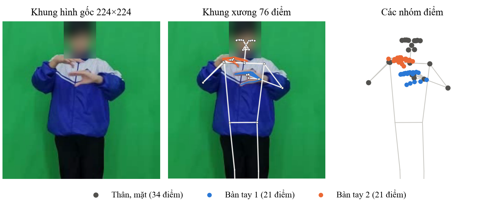
Một khung hình ký hiệu và 76 điểm khung xương mà mô hình nhìn thấy. Ảnh từ VSL400, vùng mặt đã làm mờ.
So sánh 14 mô hình trên cùng dữ liệu, cùng cấu hình huấn luyện, rồi đưa mô hình phù hợp nhất vào một sản phẩm chạy bằng webcam.
Mô hình đồ thị có thật sự tốt hơn mô hình thời gian thông thường?So với mốc MS-TCN
Có cần giữ các điểm ở chân?76 điểm so với 68 điểm
Vì sao một số cặp ký hiệu hay bị nhầm?Xem lại video và quỹ đạo tay
Mô hình có dùng được với người ký và video mới?Kiểm tra trên video QIPEDC
25 khung/giây, cắt vuông 224×224
MediaPipe: 76 điểm thân và hai bàn tay
Bắt đầu khi tay rời tư thế nghỉ, kết thúc khi hạ tay
CTR-GCN: mỗi khớp gom thông tin khớp lân cận
Từ nhận được, độ tin cậy và 5 từ gợi ý
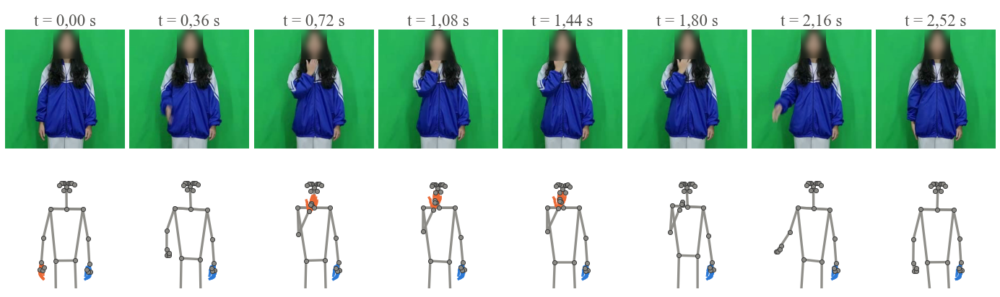
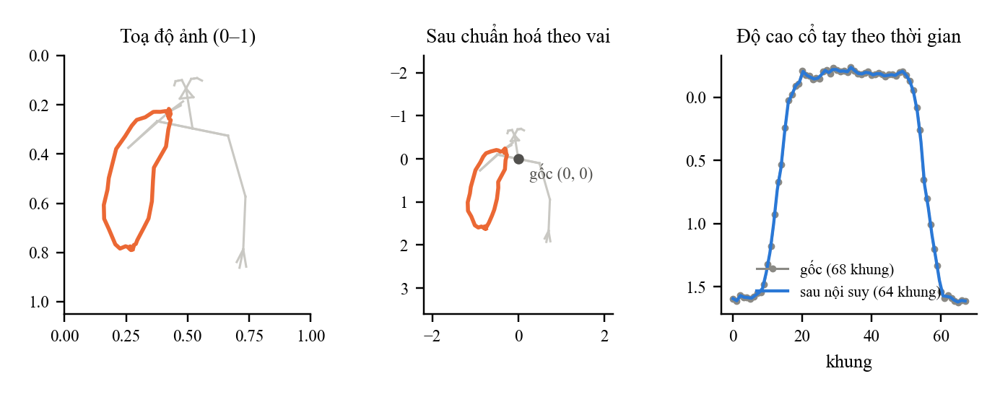
Ý tưởngKhung xương là một đồ thị: khớp là đỉnh, xương là cạnh.
Một lớpMỗi khớp cộng đặc trưng của chính nó với các khớp nối trực tiếp.
Nhiều lớp + thời gianXếp lớp để nhìn xa hơn, rồi tích chập theo các khung liền nhau.
Cách làmGộp 76 khớp thành một vector mỗi khung, rồi tích chập giãn 1, 2, 4, 8, 16 theo thời gian.
Khác ở chỗKhông biết khớp nào nối với khớp nào. Rất nhanh, là mốc mà mô hình đồ thị phải vượt.
Cách làmMỗi lớp, một khớp gom thông tin từ các khớp nối trực tiếp với nó, rồi tích chập 9 khung theo thời gian.
Khác ở chỗĐồ thị không đổi. Đầu ngón tay cách miệng khoảng 10 bước, phải qua nhiều lớp mới “thấy” nhau.
Cách làmGiữ đồ thị chung, học thêm cạnh mới riêng cho từng kênh; phần thời gian dùng nhiều nhánh giãn.
Khác ở chỗKênh về hình dạng tay nối các ngón, kênh về vị trí nối tay với mặt. Ít tham số nhất trong nhóm đồ thị.
Cách làmĐồ thị = cố định + học được + suy ra từ chính clip; thêm chú ý theo khớp, khung và kênh.
Khác ở chỗLinh hoạt nhất nhưng gần gấp đôi tham số CTR-GCN. Trên VSL400 chỉ hơn mốc 0,3 điểm, trên video lạ lại tổng quát tốt nhất.
Cách làmMỗi khung thành một token; chú ý cho mỗi khung tự chọn khung nào để nhìn; token CLS tổng hợp.
Khác ở chỗKhông dùng cấu trúc cơ thể, phải tự học mọi quan hệ nên cần nhiều dữ liệu: thấp nhất (91,3%).
Cách làmBa nhánh ST-GCN nhận 32, 64 và 96 khung; chú ý quyết định tin nhánh nào cho từng clip.
Khác ở chỗBắt được cả động tác nhanh lẫn chậm: “Bánh tét → Bánh chưng” nhầm 6/14 ở MS-TCN, còn 0/14.
Cách làmĐo trực tiếp vị trí bàn tay so với 8 mốc: hai tai, mắt, miệng, đầu, cổ và hai vai.
Khác ở chỗNhắm vào các cặp khác nhau ở điểm chạm trên mặt, như “Chị – Cô” (thái dương hay má).
Không đồ thị, tích chập giãn theo thời gian
Đồ thị cố định theo xương
Mỗi kênh học cạnh riêng
Đồ thị suy ra từ clip + chú ý
Mọi khung nhìn mọi khung
Ba tốc độ, gộp bằng chú ý
Tay so với 8 mốc trên mặt
Cùng dữ liệu, cùng cấu hình huấn luyện: chênh lệch đo được là do kiến trúc.
Số bên phải: Macro-F1 (%) trên VSL400. Viền cam: đề xuất của nhóm.
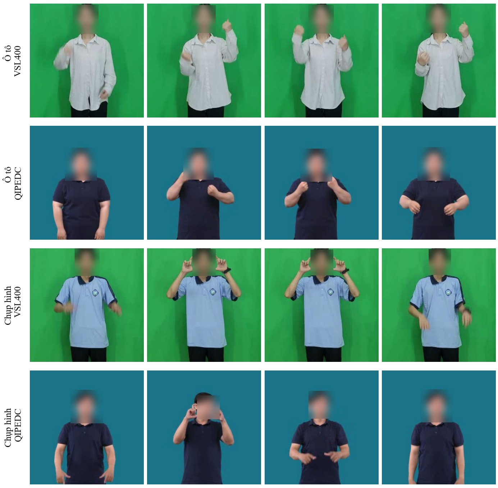
Người ký, phông nền, cách quay giống lúc huấn luyện.
Mô hình có biết “không chắc” thay vì đoán bừa?
Người ký khác, phông xanh dương, đứng xa hơn.
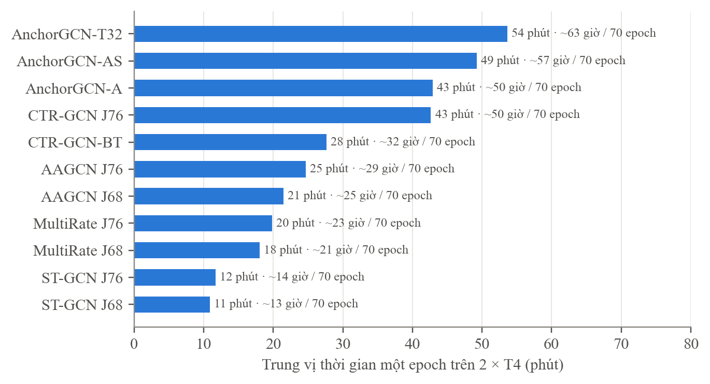
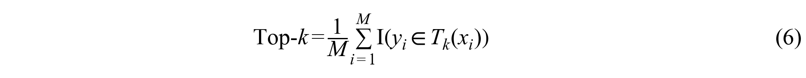
Từ đúng có nằm trong 1 (hoặc 5) dự đoán đầu?
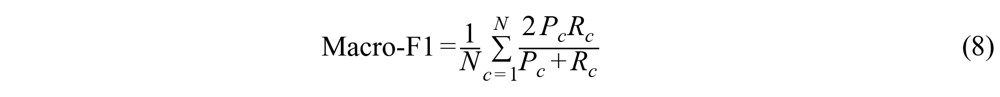
Mọi từ có trọng số như nhau, từ ít mẫu không bị lấn át.
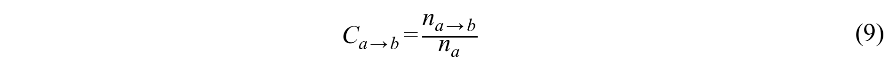
Từ a bị đoán thành từ b bao nhiêu phần.
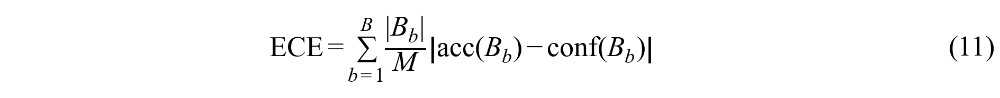
Độ tin cậy mô hình báo có khớp với độ đúng thật?
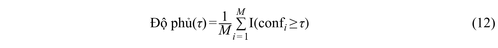
Bao nhiêu phần được trả lời khi chỉ trả lời lúc độ tin cậy ≥ τ.
Tính trên cùng 147 từ chung; đoán ra ngoài 147 từ tính là sai.
14 mô hình · 70 epoch · 2 GPU T4 · đánh giá trên 5.163 clip VSL400 và 252 clip QIPEDC khác nguồn
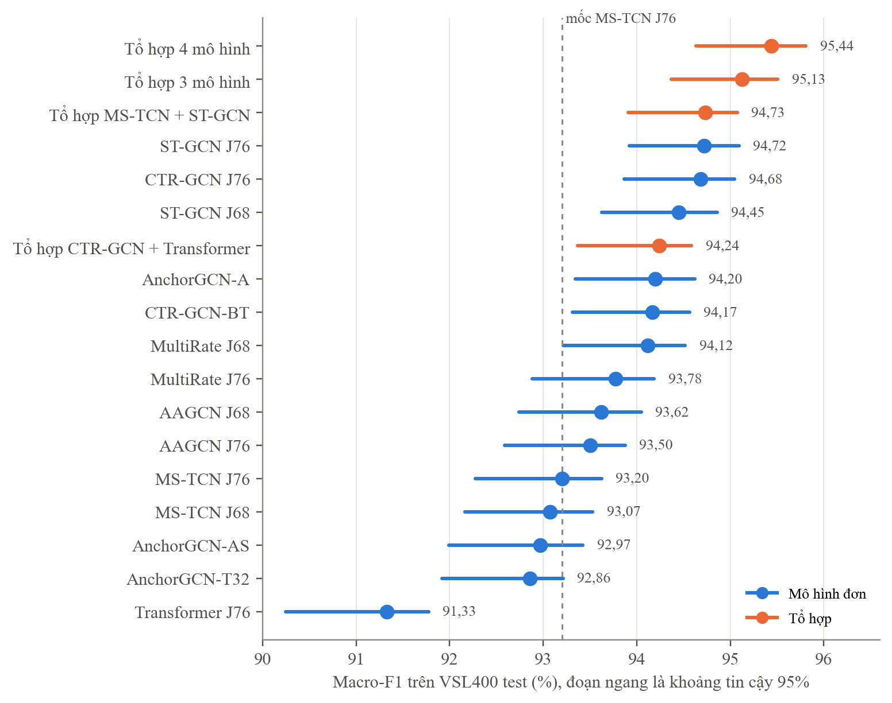
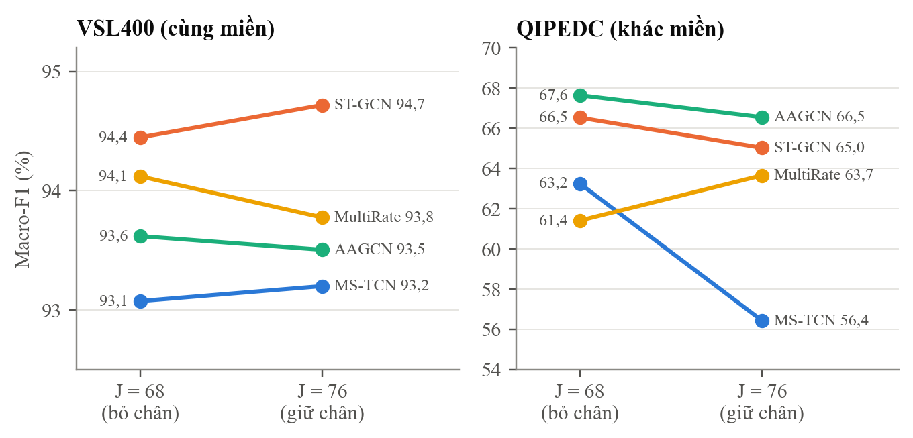
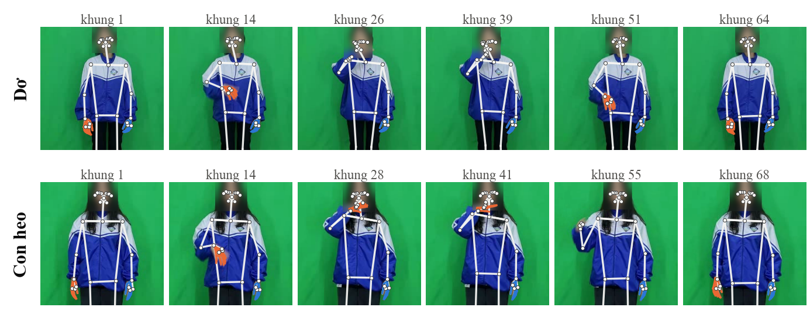
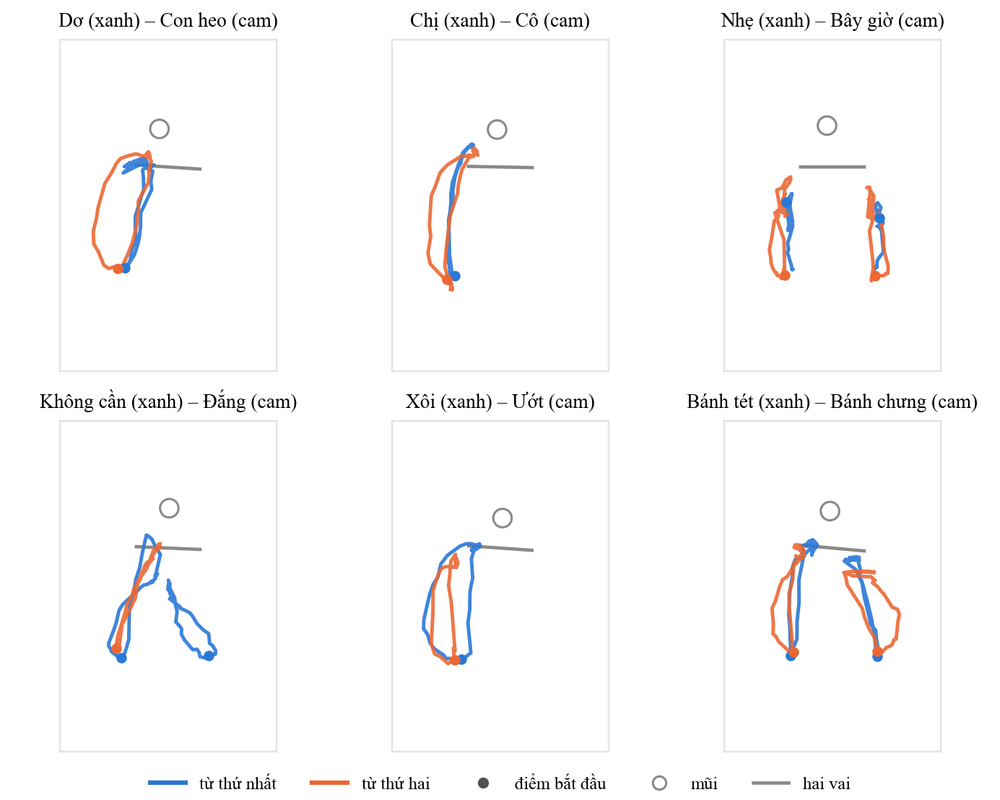
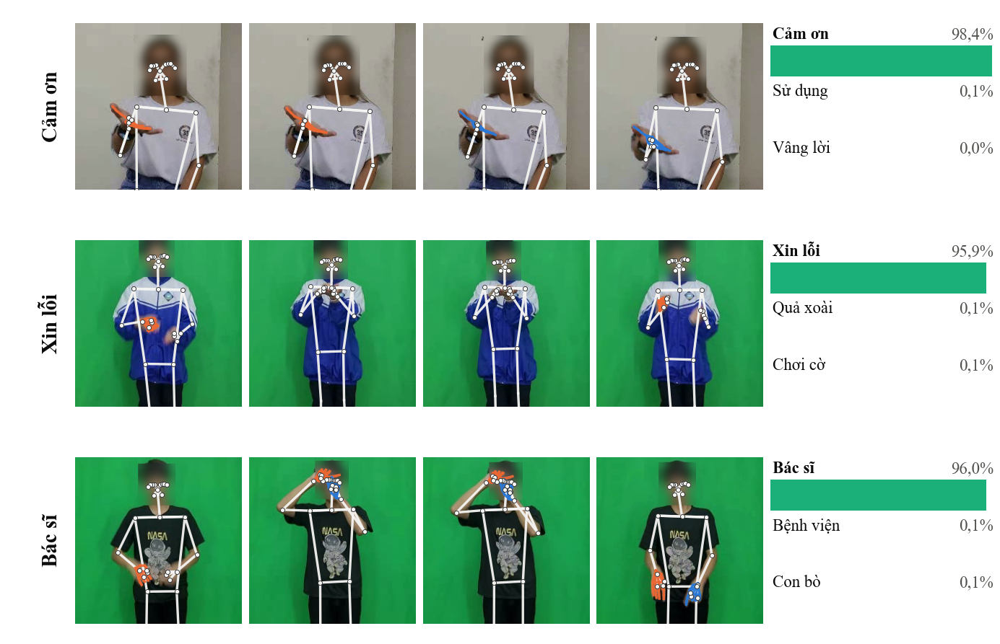
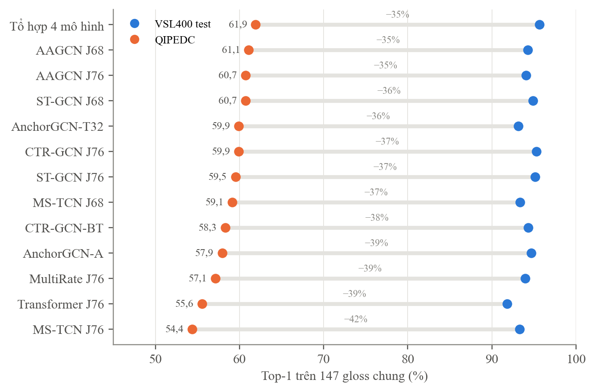
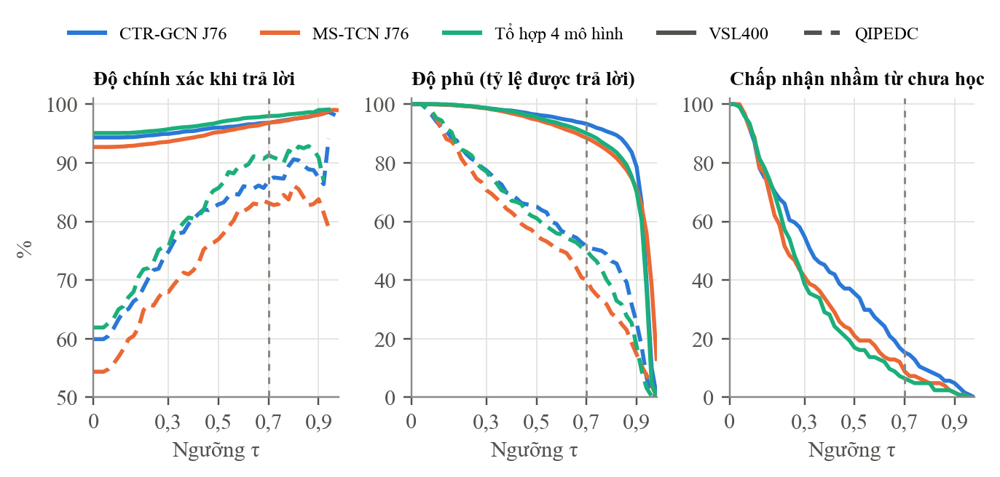
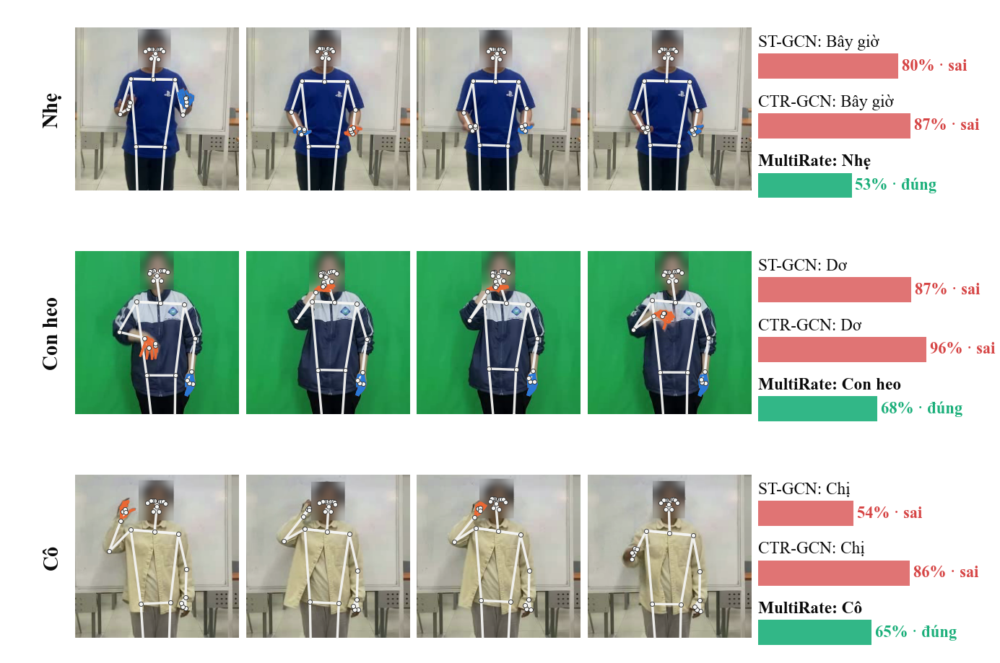
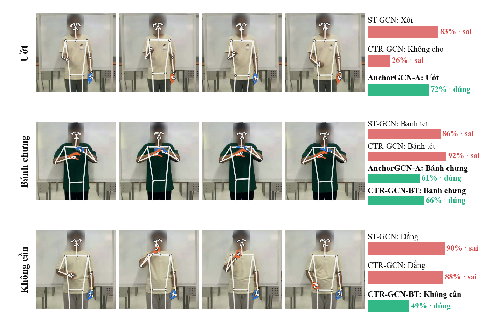
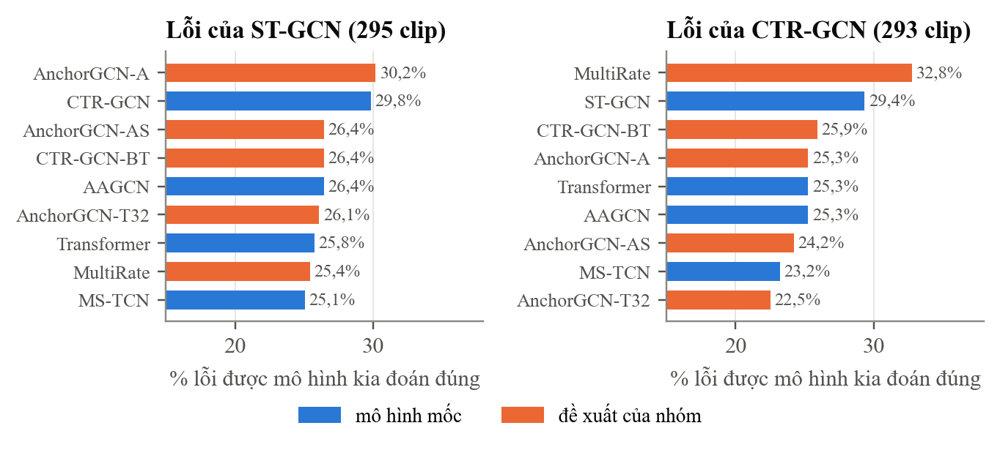
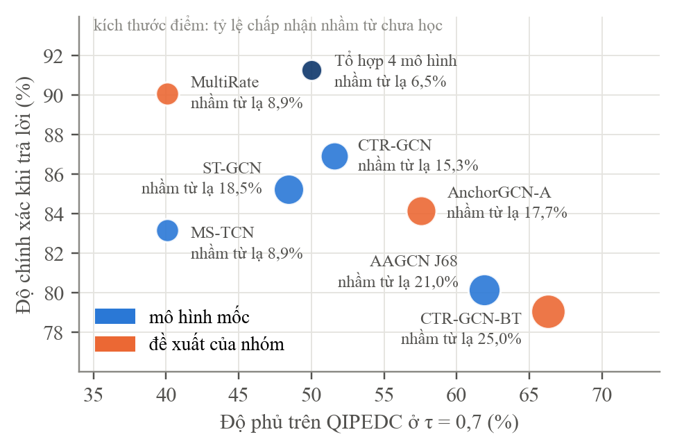
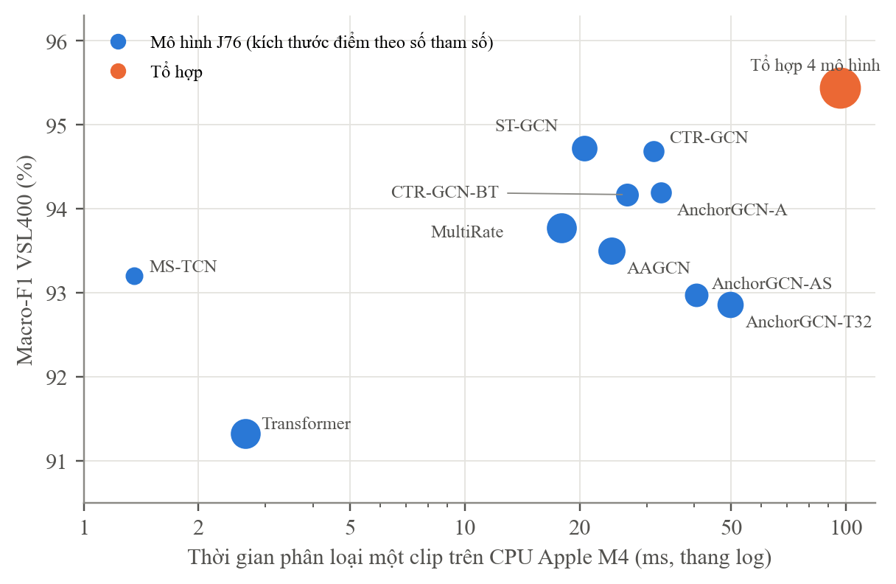
Mô hình đồ thị vượt mốc MS-TCN, chênh lệch có ý nghĩa thống kê.
Bỏ điểm chân: không giúp, còn gây nhiễu ở video lạ.
Cặp dễ nhầm trùng quỹ đạo, chỉ khác hình dạng tay, điểm chạm, nhịp, khẩu hình.
Đổi nguồn video mất khoảng một phần ba; ngưỡng và 5 gợi ý giữ sản phẩm hữu ích.
Rất mong nhận được câu hỏi và góp ý.